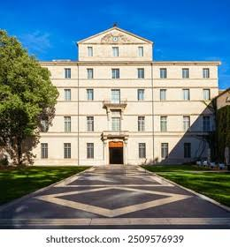
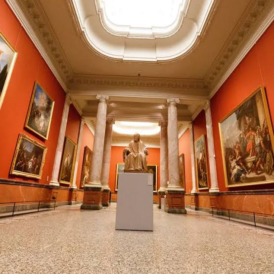

Musée FabreMontpellier


⟹ Musées Emblématiques ⟸
1779 : les prémices du musée. L’histoire du musée Fabre commence avant sa fondation officielle. En 1779, une élite montpelliéraine crée une Société des beaux-arts qui développe l’enseignement du dessin et le goût des collections. En 1802, l’État envoie à Montpellier une trentaine de tableaux : ce dépôt constitue sous l’Empire le noyau d’un premier musée municipal, encore modeste et plusieurs fois déplacé.
François-Xavier Fabre, le fondateur. Né à Montpellier en 1766, François-Xavier Fabre est formé par Jacques-Louis David et remporte le Grand Prix de Rome en 1787. Installé longtemps en Italie, notamment à Florence, il mène une carrière de peintre, de collectionneur et d’homme de culture. Revenu en France, il propose en 1825 à sa ville natale une donation considérable de peintures, dessins, gravures, livres et objets d’art, à condition qu’un musée digne de ce nom soit créé.
1828 : inauguration dans l’hôtel de Massilian. La Ville accepte la donation et aménage l’hôtel de Massilian, sur l’actuelle esplanade Charles-de-Gaulle. Le musée est officiellement inauguré le 3 décembre 1828. Fabre en devient le premier directeur et poursuit son action en faveur de l’enseignement artistique. Dès l’origine, l’établissement associe donc conservation, présentation au public et formation des artistes.

Le « musée des donateurs ». Le geste de Fabre provoque une remarquable émulation. En 1836, Antoine Valedau offre un ensemble complémentaire, particulièrement riche en peintures flamandes et hollandaises. En 1864, Jules Bonnet-Mel lègue quelque 400 dessins et 28 tableaux. D’autres collectionneurs et amateurs montpelliérains enrichissent à leur tour les fonds, donnant au musée une identité directement liée au mécénat privé.
Alfred Bruyas et l’entrée dans la modernité. Collectionneur passionné et défenseur des artistes de son temps, Alfred Bruyas offre en 1868 une part majeure de sa galerie à Montpellier, puis complète ce don par son legs. Courbet, Delacroix, Géricault, Millet et d’autres artistes du XIXe siècle entrent ainsi au musée. La rencontre de Bruyas avec Gustave Courbet, qu’il soutient personnellement, marque profondément l’histoire des collections.
De nouvelles galeries pour de nouvelles collections. L’accroissement des fonds impose des extensions. La galerie des Colonnes est construite au XIXe siècle pour présenter notamment la collection Bruyas. Au XXe siècle, le musée gagne progressivement des espaces dans les bâtiments voisins, dont l’ancien collège des Jésuites, formant un ensemble architectural complexe au cœur de Montpellier.
L’Hôtel de Cabrières-Sabatier d’Espeyran. Légué à la Ville avec son mobilier, cet hôtel particulier du XIXe siècle enrichit le musée d’un remarquable ensemble d’arts décoratifs. Présenté comme un intérieur historique, il permet de découvrir mobilier, objets et décors dans leur contexte et complète les grandes collections de peinture et de sculpture.
Le XXe siècle et l’ouverture à l’art moderne. Achats, dépôts et donations poursuivent l’enrichissement du musée. L’histoire de l’art moderne et contemporain prend une place croissante, sans rompre avec la forte identité des collections anciennes, italiennes, françaises, flamandes et hollandaises. Cette continuité entre les siècles devient l’une des singularités du parcours.
Pierre Soulages et Montpellier. Le peintre Pierre Soulages entretient un lien ancien avec le musée, qu’il découvre lorsqu’il étudie à l’École des beaux-arts de Montpellier pendant la Seconde Guerre mondiale. Les œuvres de Courbet qu’il y voit comptent dans sa formation. En 2005, Pierre et Colette Soulages consentent une donation exceptionnelle de vingt peintures, complétée par dix dépôts, donnant au musée un ensemble de référence consacré à l’artiste.

2004-2007 : une refonte complète. Après le départ de la bibliothèque municipale, une vaste campagne de restructuration est conduite par les architectes Olivier Brochet et Emmanuel Nebout. Le musée rouvre en février 2007, considérablement agrandi et modernisé. Les bâtiments historiques sont restaurés, de nouvelles galeries contemporaines sont créées et une aile lumineuse est spécialement conçue pour les grands formats de Soulages.
Un musée construit par près de deux siècles de générosité. De Fabre à Valedau, de Bruyas aux époux Soulages, l’histoire de l’institution repose sur une succession exceptionnelle de donations. Ce modèle explique la richesse et la cohérence de collections qui permettent aujourd’hui de parcourir plusieurs siècles d’art européen, de la Renaissance à la création contemporaine, tout en racontant l’histoire culturelle de Montpellier.